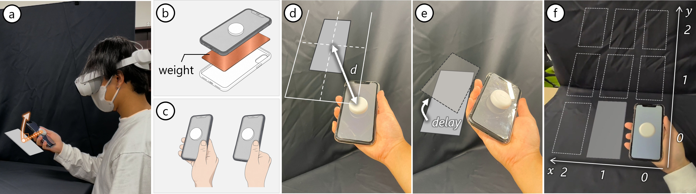

🤔Revisiting How Display Layout and Visual Delay Shape Weight Perception in Augmented Reality Extended Displays
ACM Symposium on Virtual Reality Software and Technology (VRST) 2026

1Ritsumeikan University, 2University of Stuttgart

Abstract The replicability of XR experiments is fundamental for building reliable scientific knowledge. This paper presents a replication and extension of a prior study on weight perception in augmented reality extended displays (AREDs) using updated HMD and tracking hardware and a larger participant sample. We replicated its layout and delay manipulations with nine spatial and six delay conditions. The layout effect was replicated, with displays placed closer to the hand being perceived as heavier than those placed farther away. In contrast, the delay effect differed from the original finding. Perceived weight peaked at approximately 0.30 s of visual delay and then decreased, rather than increasing monotonically. To examine this discrepancy, we tested device weight and grip style as two factors that could influence perceived weight. Neither manipulation restored the monotonic delay pattern reported in the original study. These results suggest that the layout effect of AREDs is robust across hardware conditions, whereas the delay effect is sensitive to how users interpret visuomotor discrepancies. Our findings highlight the value of replication studies in XR and clarify which aspects of ARED-related weight perception remain stable.
@inproceedings{kataoka_vrst26,
author={Kataoka, Yuta and Tanabe, Hayato and Hashiguchi, Satoshi and Nakamura, Fumihiko and Shibata, Fumihisa and Kimura, Asako and Mori, Shohei},
booktitle={ACM Symposium on Virtual Reality Software and Technology (VRST)},
title={Revisiting How Display Layout and Visual Delay Shape Weight Perception in Augmented Reality Extended Displays},
year={2026}
}
Acknowledgement This work was supported by the Alexander von Humboldt Foundation funded by the German Federal Ministry of Research, Technology and Space.